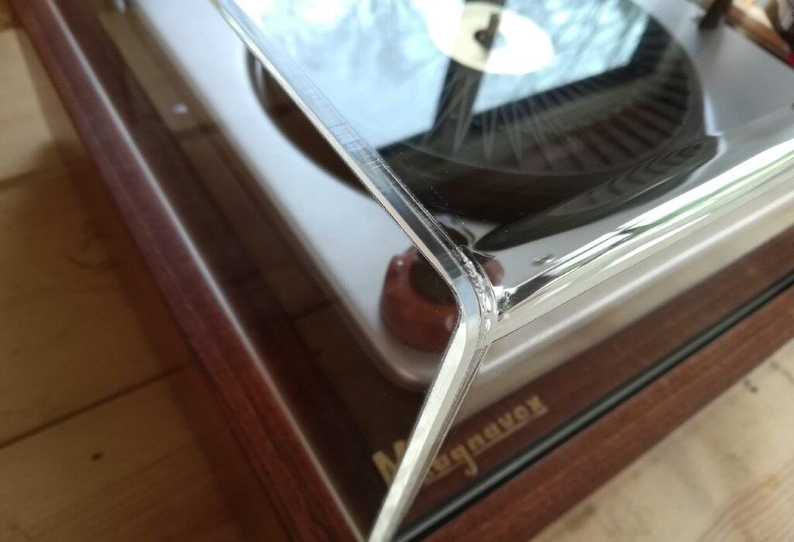

Having no place to put my roughly 50lb, 2′ x 2′ turntable, it has been living on the floor of my den, and needless to say, has been collecting dust – the arch-nemesis of vinyl. I decided it required some manner of dust cover.
I have worked with acrylic quite a bit over the years – sawing, routing, sanding, gluing, etc. – but the prospect of putting together a clear acrylic box this size filled me with no joy. While I am confident I could have done it, I know that without a table saw I would have spent a lot of time truing edges with a piece of sandpaper glued to plate glass (an old trick for getting very straight surfaces). I also calculated the cost of the materials: I’d need about 8 sq-ft of 3/16″ acrylic, the proper glue (Weld-on 4 is recommended), an applicator, sandpaper, and I’d have to build a jig for gluing the pieces at perfect right angles. The cost was going to be $60+ for the materials alone. So I opted to buy one.
A quick Google search turns up many companies who will quote a custom acrylic box. I contacted two and the quickest to respond (and cheapest) was JMK Displays. Their communication was excellent, and the quality of the cover is just as professional. The front and back edge are bent into smooth, tight radius curves, and the sides welded on at 90 degrees. Measurrements are exactly what was provided and the fit is perfect. I am very pleased with the result.
I would have liked to build every piece of this turntable myself, but it just wasn’t worth it to me, and life’s too short to spend on things that don’t give you any kind of satisfaction. I knew that I’d spend nearly as much money on materials and several hours building what amounts to something that should ideally be invisible. I’ll leave that to a professional.
Tags: dust cover, Magnavox, Turntable